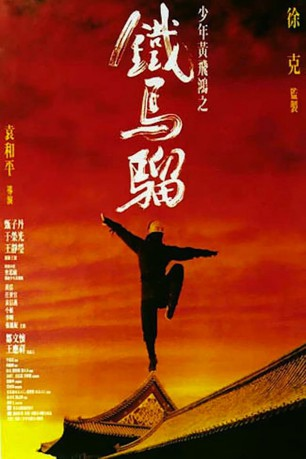

#8570 Iron Monkey
 
 IMDB-Wertung: 7.6 / 10
IMDB-Wertung: 7.6 / 10  Metascore: 0
Metascore: 0 
China im 19. Jahrhundert: Die Mandschu-Dynastie knechtet das Volk. Doch es gibt einen Mann, der sich wehrt: Der Naturheiler Dr. Yang heilt tagsüber die Armen und überfällt als "Iron Monkey" nachts die Reichen. Das Beutegut verteilt er unter den Bedürftigen. Bald setzen die Mandsch-Tyrannen ihren besten Kämpfer auf ihn an...
Jahr: 1993
Dauer: 90 Minuten
FSK: 16
Land: Hong-Kong Studio: Eureka EntertainmentTonspuren:
Untertitel: Deutsch,
Auflösung: 1080p (1920x1024) Größe: 7833 MB
Genre: Action, Drama, Krimi
Regisseur: Woo-Ping Yuen
Drehbuch: Tan Cheung
Soundtrack: Gam-Wing Chow, Johnny Njo, James L. Venable, Wai Lap Wu
Darsteller:
 Rongguang Yu als Dr. Yang / Iron Monkey
Rongguang Yu als Dr. Yang / Iron Monkey Donnie Yen als Wong Kei-Ying
Donnie Yen als Wong Kei-Ying- Jean Wang als Miss Orchid
- Sze-Man Tsang als Wong Fei-Hong
- James Wong als Governor Cheng Pak-Fong
 Hou Hsiao als Hin Hung's disciple #2
Hou Hsiao als Hin Hung's disciple #2 Mona Marshall als Young Pickpocket
Mona Marshall als Young Pickpocket Joe Ochman als Governor Cheng
Joe Ochman als Governor Cheng Bob Papenbrook als Chief Fox
Bob Papenbrook als Chief Fox Derek Stephen Prince als Suspected Monkey Donator
Derek Stephen Prince als Suspected Monkey Donator Kirk Thornton als Dr. Yang / Iron Monkey
Kirk Thornton als Dr. Yang / Iron Monkey- Shun-Yee Yuen als General Fox
 Shi-Kwan Yen als Hin Hung
Shi-Kwan Yen als Hin Hung- Fai Lee als Hin Hung's disciple #1
- Mandy Chan als Shaolin Monk #4
- Siu Wah Chan als Shaolin Monk #2
- Kwai Po Chun als Shaolin Monk #1
- Peter Doyle als Orchid's Boss (Flashback Scene)
- William Duen Wai-Lun als Fat rich patient
- Cheung Fung-Lei als Governor Cheng's favorite mistress
- Chi Tai Lam als
- Dion Lam als Constable
- Chi Wah Ling als Member of Thief gang
- Chi-Hung Ling als Constable
- Mei-Yee Sze als Governor Cheng's advisor
- Tai Wo Tang als Leader of Thief gang
- Ezra Weisz als Herbs Salesman
- Jack Wai-Leung Wong als Member of Thief gang
- Kim-Ban Wong als Member of Thief gang
- Choi-Nam Yip als
- Tony Yuen als Member of Thief gang
- Simon Broad als Governor Cheng Pak-Fong (uncredited)
Datei: X:\HD-Eastern-Classic(A-M)\Iron Monkey (1993, FSK16, 1920x1024).mkv seit 22.03.2018
Festplatte: HD Eastern+Western
 Es gibt insgesamt 63 Filme in der Gruppe 'HD-Eastern-Classic(A-M)'
Es gibt insgesamt 63 Filme in der Gruppe 'HD-Eastern-Classic(A-M)'